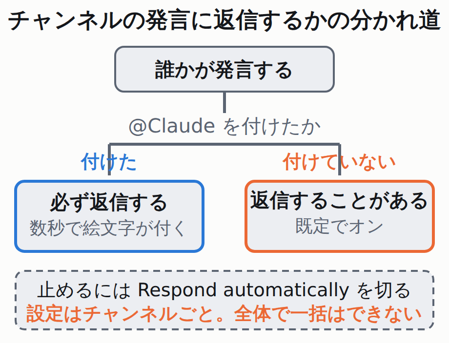

Slackの@Claudeは、呼ばれなくても返信する — 切れるのはチャンネル単位だけ
Claude Tag は、Slackのチャンネルに @Claude を置く仕組みです。組織の共有アカウントとして動き、接続先やスキル（Claudeに教える手順書。次の項目で詳しく書きます）は管理者が決めます。
なお、まだ正式版ではなく public beta（試験公開）の段階です。
最初に知っておくべきなのは、呼んでいない発言にも返信することがある点です。しかも既定でそうなっています。
The setting is on by default, so a channel Claude was just added to replies without @-mentions from the start.
つまり、チャンネルに入れた瞬間から「たまに勝手に喋る」状態で始まります。どのくらい喋るかは、Claudeがチャンネルの履歴と記憶から判断します。

問題は止め方です。設定は Respond automatically ひとつですが、置き場所に制約があります。
Each channel has its own copy of the setting, and there is no workspace- or organization-wide version. To make Claude mention-only across many channels, turn it off in each one.
50チャンネルに入れたなら、50回切ることになります。導入を決める前に、入れるチャンネルを絞るほうが早いという判断材料です。
切り方は3通り。どれも同じ設定を変える
1. Slackで直接頼む。@Claude only respond in this channel when someone @-mentions you directly. と書くと、Claudeが変更を確認して返します。この変更はそのチャンネル全員に効きます（自分だけ静かになるのではありません）。
2. Claudeの返信のフッターにある Configure リンクを開き、Respond automatically を切る。
3. 管理者は claude.ai/admin-settings/claude-tag の Slack タブから、該当スコープの Advanced で切る。スコープとは、Claude Tag の設定をまとめて掛ける単位です（どのチャンネル群に効かせるかの区切り）。
なお、既にClaudeが入っているスレッドは別扱いです。チャンネル全体を切ってもそのスレッドだけは返信が続くので、スレッド内で個別に頼む必要があります。
もう1つ、ClaudeのTeam / Enterpriseプラン（法人契約）で使っている場合は、旧版の廃止が待っています。従来の「Claude in Slack」（Claude Code in Slack を含む。管理画面では Legacy と表示されます）は、各自のアカウントで動く仕組みでした。これがClaude Tagに置き換わります。
The earlier Claude in Slack app, shown as Legacy in admin settings, is being deprecated; check with your account team for the cutover date. After that date, channels still set to Legacy stop responding until the scope's Claude Tag version is set to New.
移行日は公表されていません。「契約窓口に聞け」と書いてあるだけです。日付が公開資料に無い以上、当媒体からも書けません。
切り替えで何が消えるかは、はっきり書かれています。新版は自分の接続を1つも持たずに始まります。
| 切替後 | どうなるか |
|---|---|
Slackアプリと @Claude の名前 | そのまま。入れ直しは原則不要 |
| DM | 従来どおり各自の claude.ai アカウントで動く |
| GitHubリポジトリなどの接続 | 引き継がれない。管理者が Access bundle（Claudeに渡す接続先をまとめた管理者向けの設定）に足すまで、コードの依頼をしても読みにいけるリポジトリが無い |
| 過去のデータ | 移行されない |
- 入れる予定があるなら。入れるチャンネルを絞ってから始める。あとから全体を静かにする手段がありません。
- 法人契約の管理者なら。契約窓口にLegacyの移行日を聞き、移行前にGitHub接続の張り直しを段取りしておく。
- 今やること。SlackにClaudeを入れていなければ対応は不要。入れているなら上の2つ。